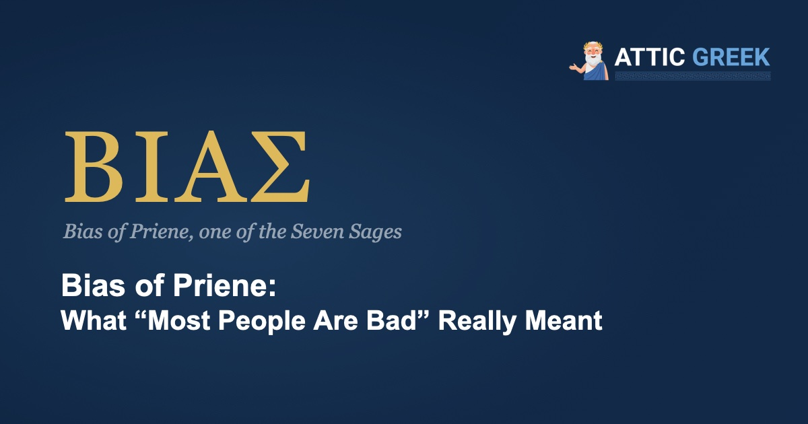

In the Vatican Museums stands a marble bust of a Greek sage. It carries his name, ΒΙΑΣ, and a sentence in Greek capitals, run together without spaces, that stops you cold:
ΟΙΠΛΕΙΣΤΟΙΑΝΘΡΩΠΟΙΚΑΚΟΙ
Break it into words and it becomes:
οἱ πλεῖστοι ἄνθρωποι κακοί.
hoi pleîstoi ánthrōpoi kakoí.
Most people are bad.
Attributed to Bias of Priene
It is a hard thing to read in a quiet gallery, and harder in a year when the world feels hostile. But the man who said it has more to say, and the Greek is more careful than the English.
What does it say, word by word?
οἱ is the definite article, “the,” the same little word we looked at in our article on the article. πλεῖστοι is “the most,” the superlative of πολύς, “many.” ἄνθρωποι means “people,” human beings and not only men. κακοί means “bad,” and it can mean base, worthless or cowardly as well as wicked.
There is no verb. Ancient Greek simply leaves out “are,” the same quiet habit we met in the verb “to be”. One more detail: Diogenes Laertius, who collected the sayings of the Seven Sages, records it in an even shorter form, οἱ πλεῖστοι κακοί, “most are bad.” The bust spells out who the “most” are.
Who was Bias?
Diogenes introduces him as Βίας Τευτάμου Πριηνεύς: Bias, son of Teutamos, of Priene, an Ionian city on the coast of what is now Turkey. (Notice the father's name in the genitive, “of Teutamos,” the same pattern as on a gravestone.) He lived around 570 BC and was counted among the Seven Sages. He was, we are told, a formidable speaker in the law courts who used that gift for good, and he is said to have died in old age just after winning a case, resting his head in his grandson's lap. His city set aside a precinct in his honor.
Was he really that grim?
Read in context, the saying is practical, not despairing. Diogenes gives it as the reason for a piece of advice about friendship:
φιλεῖν ὡς μισήσοντας· τοὺς γὰρ πλείστους εἶναι κακούς.
phileîn hōs misēsontas; toùs gàr pleístous eînai kakoús.
Love as if you were going to hate; for most people are bad.
Diogenes Laertius 1.87
In plain terms: be warm to people, but don't hand over your trust so completely that you would be crushed if they turned on you. It is not an invitation to hate. It is kindness with open eyes. Diogenes adds a companion thought: Bias said he preferred judging between enemies to judging between friends, because of two friends one is sure to become an enemy, while of two enemies one will become a friend.
And the same chapter shows a different Bias. One source says he ransomed captured girls and raised them as his own daughters, giving them dowries and sending them home. Asked what is sweet to people, he is said to have answered a single word, ἐλπίς, “hope.” And when he advised what to carry through life, he did not point outward at all:
ἐφόδιον ἀπὸ νεότητος εἰς γῆρας ἀναλάμβανε σοφίαν· βεβαιότερον γὰρ τοῦτο τῶν ἄλλων κτημάτων.
ephódion apò neótētos eis gêras analámbane sophían; bebaiótheron gàr toûto tôn állōn ktēmátōn.
Take wisdom as your provision from youth to old age; it is more secure than all other possessions.
Diogenes Laertius 1.88
Why read the letters on a museum wall?
Because they are everywhere. Walk through almost any museum in Europe and Greek letters turn up on busts, vases, columns and coins, and most visitors pass them by. A little Greek turns a label into a voice, and now and then it hands you a surprise, like a stranger carved in marble who speaks across more than two thousand years and says something you didn't expect to hear that day.
Look once more at the saying: οἱ πλεῖστοι, “the most.” It does not say οἱ πάντες, “all.” Maybe most people are bad, as Bias thought. But the sentence leaves a door open, and the people who walk through it are the ones who take his advice: they look inwards, pack wisdom for the road, and quietly try to improve themselves.
Read the words behind the marble
Attic Greek teaches Ancient Greek from the alphabet up — 210 structured lessons, quizzes, flashcards, and annotated readings from Homer, Plato, and the great classical authors, with Socrates himself as your guide.
Start with 5 free lessons →Five lessons and the opening of the Odyssey, free forever. Then $4.99/month or $34.99/year.